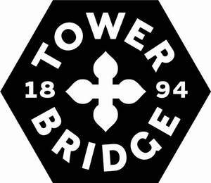
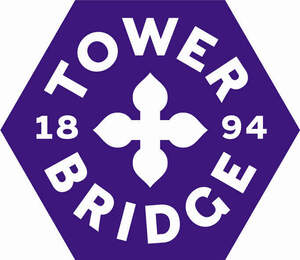
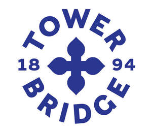
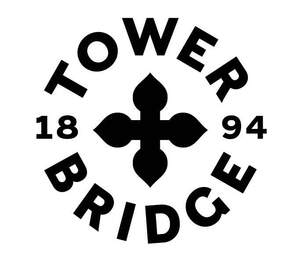

Trade Mark Journal No.2026/003 16 January 2026
UK00004268717 24 September 2025 (9,14,16,18,21,25,28,29,30,32,33,35,36,37,39,41,43,45)
Mark 1

Mark 2

Mark 3

Mark 4

- Class 9
- Scientific, nautical, surveying, photographic, cinematographic, optical, weighing, measuring, signalling, checking [supervision], life-saving and teaching apparatus and instruments; Apparatus and instruments for conducting, switching, transforming, accumulating, regulating or controlling electricity; Apparatus for recording, transmission or reproduction of sound or images; magnetic and optical data carriers, recording discs; compact discs; optical and magneto-optical discs; tapes; DVDs; CD Roms; USB memory devices and other digital recording media; films; film and electronic publications related to the arts, education, architecture, fashion and photography; film prepared for exhibition; music recordings; mechanisms for coin-operated apparatus; Cash registers, calculating machines, data processing equipment, computers; computer software; Fire-extinguishing apparatus; software downloadable from the Internet; downloadable electronic publications, magazines, leaflets, newsletters and forms; e-books; mouse mats; telecommunications apparatus; cinematographic and television films; cinematographic and television films, namely, motion picture films featuring entertainment; digital music and software and film downloadable from the internet; computer databases; computer databases of reports of crime, financial crime and fraud; computer databases of financial information; computer software for analysing crime; computer software for analysing reports of fraud; computer software for analysing financial crime; computer software for providing alerts in relation to crime, financial crime and fraud; computer software for analysing, processing and monitoring patterns and networks in data; computer software relating to data mining; electrical and electronic apparatus and equipment and software for the prevention and detection of crime and fraud; downloadable computer software for mobile phones and mobile devices; electronic tablets; mobile phone applications and accessories; teaching apparatus, instruments and machines; downloadable electronic instructional and teaching materials; computer software platforms; computer e-commerce software; computer software and programs to act as an e-commerce platform and bespoke software technology to allow businesses and their supply chains to conduct transactions over remote computer databases; computer software and programs for order management, processing and tracking, remote site management and customer relationship management, analysis of customer preferences and buying patterns; computer software and programs for use in database management, spread sheets, word processing and for graphical applications and design; computer software for use in transport, logistics and supply chain management; computer software and programs for processing, manipulating, analysing and transmitting data; pre-recorded data media, namely, magnetic discs, optical discs, magneto optical discs; encoded membership cards; apparatus for the recording, transmission or reproduction of sound or images; audio recorders and players; communications apparatus, equipment and accessories; telecommunications apparatus, equipment and accessories; paging apparatus and equipment; computers; computer hardware; computer firmware; data processing equipment; downloadable games; downloadable computer software; computer software supplied from the Internet; computer software and telecommunications apparatus to enable connection to databases and the Internet; decorative magnets; plug socket covers; articles of protective clothing; digital signage; downloadable electronic maps; batteries; battery chargers; fridge magnets; mobile phones; mobile phone cases; headphones; calculators; parts and fittings for all the aforesaid goods .
- Class 14
- Precious metals and their alloys; jewellery, enamelled jewelery, costume jewellery, precious and semi-precious stones; horological and chronometric instruments; clocks and watches; badges and broaches of precious metal; cufflinks; key rings; parts and fittings for all the aforesaid goods.
- Class 16
- Paper and cardboard; printed matter; printed publications; books, magazines, newsletters, brochures, booklets, notices, information sheets, books, lists, manuals and reports, certificates, diaries and leaflets; tickets; stationery and office requisites; book binding material; banners of paper and cardboard; flags; adhesives for stationery or household purposes; writing implements; pencils; pencil sharpeners; pens; highlighters; crayons; chalk; rulers; pencil cases and boxes; artists' materials; drawing material; paint brushes, photographs; posters; stickers; Christmas cards; invitations; printed menus; art prints; fine art prints; postcards; calendars; money clips; gift boxes; paper carrier bags; flyers; notebooks; drawing sheets; paper and cardboard folders; plastic sheets, films and bags for wrapping and packaging; printers’ type; printing blocks; passport holders; signs of card and paper; advertising signboards; picture postcards; greetings cards; printed maps; sheet music; instructional and teaching manuals; teaching materials for education; printed awards; engravings; wax (Sealing-); sealing stamps; table place setting mats of cardboard; packing bags of paper; packaging material; packaging materials made of paper; packaging materials made of cardboard; packaging material made of card; wrapping materials made of card; wrapping materials made of cardboard; wrapping materials made of paper; wrapping materials made of plastics; plastics for modelling; correcting and erasing implements; educational equipment; printing equipment; photo albums; writing materials; writing or drawing books; writing pads; writing paper; stamping implements; books; guide books; colouring books; catalogues; cards; instruction manuals; magazines; mail order catalogues; newspapers; pamphlets; periodical publications; decalcomanias; diaries; folios; desktop business card holders; gift cards; gift vouchers; labels; maps; thesauri; dictionaries; personal organizers; postage stamps; appointment books; industrial paper and cardboard; money clips of precious metals; absorbent paper; bathroom tissue; coasters of paper or cardboard; tissues of paper; towels of paper; hygienic paper; kitchen paper; napkins made of paper for household use; table cloths of paper; table mats of paper; table mats of cardboard; toilet paper; toilet rolls; vouchers; credit cards without magnetic coding; cards for use in connection with sales and promotional incentive schemes and promotional services; printed forms; savings stamps; adhesive tapes for stationery or household purposes; gift bags; photographic printing paper; books for babies, infants and children; babies' journals; paper badges; cardboard badges; stencils; modelling clay; passport cases; paper handkerchiefs; parts and fittings for all the aforesaid goods.
- Class 18
- Leather and imitations of leather; animal skins, hides; luggage and carrying bags; trunks and travelling bags; briefcases; suitcases; handbags, rucksacks, purses, wallets; pouches; bags; sports bags; toiletry bags; wash bags; shopping bags of all materials; rucksacks; leather and imitation leather folders and folios; umbrellas, parasols and walking sticks; handbags; key fobs made of leather incorporating key rings; whips, harnesses and saddlery; collars, leashes and clothing for animals; parts and fittings for all of the aforesaid goods.
- Class 21
- Household or kitchen utensils and containers; combs and sponges; brushes; tableware, vases, coin boxes, statues, figurines and ornaments made of ceramics, glass, porcelain or earthenware; cups; saucers; mugs; bottles; water bottles; ceramic plaques; planters of plastic, porcelain, pottery and ceramic; crockery; drinking glasses; drinking glasses made of plastics; cool bags; cosmetics bags (fitted); parts and fittings for all of the aforesaid goods.
- Class 25
- Clothing, footwear, headgear; uniforms; ties; scarves; t-shirts; jumpers; sweatshirts; work wear (non-productive); overalls; jackets; socks; blouses; hats; sun hats; gloves; clothing for ladies; lingerie; dressing gowns; night dresses; sleep shirts; shorts; leggings; belts; trousers; jeans; headbands; coats; shirts; sweaters; vests; skirts; waterproof clothing; swimming costumes; pyjamas; undergarments; suits; dresses; articles of clothing for leisurewear; articles of clothing for casualwear; articles of clothing for sportswear; articles of outer clothing; blazers; denims; jerseys; knitwear; tops; ties, bow ties.
- Class 28
- Games and playthings; toys; squeezable stress toys; playing cards; whistles; balloons; gymnastic and sporting articles; decorations for Christmas trees; children’s toy bicycles; flying disks; parts and fittings for all of the aforesaid goods.
- Class 29
- Meat, fish, poultry and game; meat extracts; preserved, dried and cooked fruits and vegetables; jellies, jams, compotes; eggs, milk and milk products; edible oils and fats; prepared meals; soups and potato crisps.
- Class 30
- Coffee, tea, cocoa, sugar, rice, tapioca, sago, artificial coffee; flour and preparations made from cereals, bread, pastry and confectionery, ices; honey, treacle; yeast, baking-powder; salt, mustard; vinegar, sauces (condiments); spices; ice; sandwiches; prepared meals; pizzas, pies and pasta dishes.
- Class 32
- Beers; mineral and aerated waters and other non-alcoholic beverages; fruit beverages and fruit juices; syrups and other preparations for making beverages.
- Class 33
- Alcoholic beverages, except beers.
- Class 35
- Advertising; Business management; Business administration; Office functions; Business services; accounting services; public relations services; business information; marketing; sales promotion for others; retail services in relation to software; retail services in relation to e-commerce platforms; management of a retail enterprise for others; business services relating to the commercialization of goods and services; business services to facilitate the sales of goods and services via the global electronic communications network; information, advisory and consultancy services in the field of retail and ecommerce; electronic e-commerce services, namely providing information about products for advertising and sales purposes; presentation of goods on communications media and the internet, for retail purposes; advertising and marketing; advertising and marketing services provided by means of blogging; brand creation, positioning, testing and strategy services; product promotional services; business management; business administration; business information services, business enquiries, business investigations, business research; procurement, sourcing and selection services [purchasing, sourcing and selecting goods and services for others]; procurement of contracts for others relating to the sale of goods and services; inventory management services; customer relationship management services for others; compilation and systemization of information into databases; management of computerized databases; marketing research, statistical information, news services, business news, company statistics; provision of business and commercial information; data processing services; handling information, treating information and codifying information; commercial inventory management services; rental of vending machines; office functions; retrieval of data information; computerized data collection services for retailers; retail services in store, online retail and mail order retail services and wholesale distribution services, connected with the sale of bath salts and scented oils, essential oils, books, business card holders, calendars, candle holders, candles, fragranced candles, clocks, cosmetics and cosmetics sets, alcoholic beverages and sets, glasses, diaries, folios, games and playthings, confectionery and chocolate, jewellery boxes, keyrings, lighters, luggage tags, mobile phone cases, money boxes, money clips, passport holders, perfumes and aftershaves, photograph albums, pictures and artwork, picture and photo frames, reed diffusers and shaving sets, fashion items and accessories (namely badges, collar stiffeners, cufflinks, ear muffs, gloves, hair clips, hairbands, makeup brushes and brush sets, sunglasses), automotive parts and accessories, computers, candle holders, cosmetics and cosmetics sets, alcoholic beverages and sets, games and playthings, confectionery and chocolate, jewellery boxes, lighters, luggage tags, money boxes, money clips, perfumes and aftershaves, photograph albums, pictures and artwork, picture and photo frames, reed diffusers and shaving sets, home goods (namely bottle openers, brooms, brushes, chopping boards, combs and sponges, cookware, corkscrews, electric kitchen tools, food preparation implements, kitchen knives, cutlery, furniture, garden furniture, kitchen furniture, bathroom furniture, glassware, porcelain and earthenware, household or kitchen utensils and containers, kitchen scales and tableware), home decor (namely pillows and cushions, Christmas decorations, decorations for Christmas trees, dried flowers, curtains, figurines and decorative items of porcelain, ceramic, earthenware or glass, household textiles, lamps and lighting apparatus, linen, table mats, mats and rugs, bath mats, mirrors, picture frames, table linen, table runners, towels, vases), bedding, home improvement goods (namely electrically operated handheld tools, hand tools, paint, paint brushes, paint rollers and paint trays), health and beauty products, jewellery, office supplies, art work and paintings, cigars, cocktail shakers, containers for cigars, cooling buckets for wine, hip flasks, tobacco containers and humidors, coasters, wine coolers and wine decanters, sporting goods, toys and hobby items (namely adhesives for stationery or household purposes, apparatus for mounting photographs, artists' materials, arts, crafts and modelling equipment, boards and easels, bookbinding material, coloured liquids for use in children's crafts, drawing materials, pens, pencils, chalk, embroidery designs and patterns, etchings and engravings, stamps (seals), stencils, stickers, craft sets, modelling clay, modelling materials and compositions, paper articles for use in relation to craft, printed matter, colouring books, paper, cardboard, self-adhesive tapes for stationery or household purposes and stationery), bleaching preparations and other substances for laundry use, Cleaning, polishing, scouring and abrasive preparations, Non-medicated soaps, Perfumery, essential oils, non-medicated cosmetics, non-medicated hair lotions, Non-medicated dentifrices, baby wipes, non-medicated balms, bath oils, bath foams, shower foams, lotion, beauty masks, oils, scented oils, body washes, skin care mousse, baby bath mousse, creams and lotions for the skin, non-medicated preparations for the application to, condition and care of the hair, scalp, skin and nails, shampoo, baby shampoo mousse, conditioner, sun-tanning preparations, sunscreen preparations, skin cleansers and hydrators, skin tones, skin moisturisers, toilet powders, talcum powders, massage gels other than for medical purposes, oils for cleaning purposes, oils for cosmetic purposes, oils for toilet purposes, petroleum jelly for cosmetic purposes, soaps and gels, soap, hand cleaning preparations, preparations for the bath, bath salts, not for medical purposes, cotton sticks for cosmetic purposes, cotton wool for cosmetic purposes, cleaning preparations, fragrancing preparations, potpourri, room fragrancing preparations, household fragrances, vehicle cleaning preparations, laundry preparations, fabric conditioners, detergent soap, fabric softeners, laundry bleaching preparations, soap powders, washing powder, reed diffusers, colognes, toothpaste, cosmetics, makeup, foundation, lipsticks, eye shadows, mascara, body butters, bubble bath, hair moisturisers, hair creams, hair gel, hair spray, hair colouring, hair straightening preparations, scented waters, perfume, cologne, pot pourri, room scenting spray, deodorants, anti-perspirants, hand and nail cream, shaving cream, shaving balm, shaving lotions, shaving gels, scientific, nautical, surveying, photographic, cinematographic, optical, weighing, measuring, signalling, checking [supervision], life-saving and teaching apparatus and instruments, Apparatus and instruments for conducting, switching, transforming, accumulating, regulating or controlling electricity, Apparatus for recording, transmission or reproduction of sound or images, magnetic and optical data carriers, recording discs, compact discs, optical and magneto-optical discs, tapes, DVDs, CD Roms, USB memory devices and other digital recording media, films, film and electronic publications related to the arts, education, architecture, fashion and photography, film prepared for exhibition, music recordings, mechanisms for coin-operated apparatus, Cash registers, calculating machines, data processing equipment, computers, computer software, Fire-extinguishing apparatus, software downloadable from the Internet, downloadable electronic publications, magazines, leaflets, newsletters and forms, e-books, mouse mats, telecommunications apparatus, cinematographic and television films, cinematographic and television films, namely, motion picture films featuring entertainment, digital music and software and film downloadable from the internet, computer databases, computer databases of reports of crime, financial crime and fraud, computer databases of financial information, computer software for analysing crime, computer software for analysing reports of fraud, computer software for analysing financial crime, computer software for providing alerts in relation to crime, financial crime and fraud, computer software for analysing, processing and monitoring patterns and networks in data, computer software relating to data mining, electrical and electronic apparatus and equipment and software for the prevention and detection of crime and fraud, downloadable computer software for mobile phones and mobile devices, electronic tablets, mobile phone applications and accessories, teaching apparatus, instruments and machines, downloadable electronic instructional and teaching materials, computer software platforms, computer e-commerce software, computer software and programs to act as an e-commerce platform and bespoke software technology to allow businesses and their supply chains to conduct transactions over remote computer databases, computer software and programs for order management, processing and tracking, remote site management and customer relationship management, analysis of customer preferences and buying patterns, computer software and programs for use in database management, spreadsheets, word processing and for graphical applications and design, computer software for use in transport, logistics and supply chain management, computer software and programs for processing, manipulating, analysing and transmitting data, pre-recorded data media, namely, magnetic discs, optical discs, magneto-optical discs, encoded membership cards, apparatus for the recording, transmission or reproduction of sound or images, audio recorders and players, communications apparatus, equipment and accessories, telecommunications apparatus, equipment and accessories, paging apparatus and equipment, computers, computer hardware, computer firmware, data processing equipment, downloadable games, downloadable computer software, computer software supplied from the Internet, computer software and telecommunications apparatus to enable connection to databases and the Internet, decorative magnets, plug socket covers, articles of protective clothing, digital signage, downloadable electronic maps, batteries, battery chargers, fridge magnets, mobile phones, mobile phone cases, headphones, calculators, precious metals and their alloys, jewellery, costume jewellery, precious stones, horological and chronometric instruments, clocks and watches, desk clocks, badges and brooches of precious metal, lapel badges, medallions, key rings, bracelets, necklaces, earrings, jewellery charms, key chains, cufflinks, brooches, jewellery boxes, key fobs made of leather incorporating key rings, paper and cardboard, printed matter, printed publications, books, magazines, newsletters, brochures, booklets, notices, information sheets, books, lists, manuals and reports, certificates, diaries and leaflets, tickets, stationery and office requisites, book binding material, banners of paper and cardboard, flags, adhesives for stationery or household purposes, writing implements, pencils, pencil sharpeners, pens, highlighters, crayons, chalk, rulers, pencil cases and boxes, artists' materials, drawing material, paint brushes, photographs, posters, stickers, Christmas cards, invitations, printed menus, art prints, fine art prints, postcards, calendars, money clips, gift boxes, paper carrier bags, flyers, notebooks, drawing sheets, paper and cardboard folders, plastic sheets, films and bags for wrapping and packaging, printers’ type, printing blocks, passport holders, signs of card and paper, advertising signboards, picture postcards, greetings cards, printed maps, sheet music, instructional and teaching manuals, teaching materials for education, printed awards, engravings, wax (Sealing-), sealing stamps, table place setting mats of cardboard, packing bags of paper, packaging material, packaging materials made of paper, packaging materials made of cardboard, packaging material made of card, wrapping materials made of card, wrapping materials made of cardboard, wrapping materials made of paper, wrapping materials made of plastics, plastics for modelling, correcting and erasing implements, educational equipment, printing equipment, photo albums, writing materials, writing or drawing books, writing pads, writing paper, stamping implements, books, colouring books, catalogues, cards, instruction manuals, magazines, mail order catalogues, newspapers, pamphlets, periodical publications, calendars, decalcomanias, diaries, folios, desktop business card holders, gift cards, gift vouchers, labels, maps, printed publications, thesauri, dictionaries, personal organizers, postage stamps, postcards, posters, appointment books, industrial paper and cardboard, money clips of precious metals, absorbent paper, bathroom tissue, coasters of paper or cardboard, tissues of paper, towels of paper, hygienic paper, kitchen paper, napkins made of paper for household use, table cloths of paper, table mats of paper, table mats of cardboard, toilet paper, toilet rolls, vouchers, credit cards without magnetic coding, cards for use in connection with sales and promotional incentive schemes and promotional services, printed forms, savings stamps, adhesive tapes for stationery or household purposes, gift boxes, gift bags, photographic printing paper, books for babies, infants and children, babies' journals, paper badges, cardboard badges, stencils, stickers, modelling clay, passport cases, leather and imitations of leather, animal skins, hides, luggage and carrying bags, trunks and travelling bags, briefcases, suitcases, handbags, rucksacks, purses, wallets, pouches, bags, sports bags, toiletry bags, shopping bags of all materials, rucksacks, leather and imitation leather folders and folios, shopping bags of all materials, umbrellas, parasols and walking sticks, handbags, pouches, key fobs made of leather incorporating key rings, whips, harnesses and saddlery, collars, leashes and clothing for animals, household or kitchen utensils and containers, place mats, not of paper or textile, combs and sponges, brushes, articles for cleaning purposes, unworked or semi-worked glass, except building glass, glassware, porcelain and earthenware, articles made of ceramics, glass, porcelain or earthenware, cups, saucers, mugs, bottles, water bottles, ceramic plaques, decorative plates, coasters, planters of plastic, porcelain, pottery and ceramic, crockery, serving dishes, drinking glasses, drinking glasses made of plastics, cool bags, cosmetics bags, wash bags, glass ornaments, combs and sponges, brushes, vases, candle holders, corkscrews, cocktail shakers, cooling buckets for wine, champagne buckets, wine decanters, hip flasks, wine aerators, coasters, clothing, footwear, headgear, uniforms, ties, scarves, handkerchiefs, t-shirts, jumpers, sweatshirts, workwear (non-protective), overalls, jackets, socks, blouses, hats, sun hats, scarves, gloves, clothing for ladies, lingerie, dressing gowns, night dresses, sleep shirts, shorts, leggings, belts, trousers, jeans, headbands, coats, jumpers, shirts, sweaters, vests, skirts, waterproof clothing, swimming costumes, pyjamas, undergarments, suits, dresses, articles of clothing for leisurewear, articles of clothing for casualwear, articles of clothing for sportswear, articles of outer clothing, blazers, denims, jerseys, knitwear, sweatshirts, tops, belts, ties, bow ties, games, toys and playthings, Gymnastic and sporting articles, Decorations for Christmas trees, video game apparatus, toys for babies and infants, multiple activity toys for babies, toys, board games, children’s toys, soft-toys, stuffed toys, dolls, children’s playhouses, children’s play cosmetics, costumes being children’s playthings, indoor play apparatus for children, children’s ride on toy vehicles, fancy dress outfits, infants’ swing seats, infants action crib toys, infants’ swings, baby playthings, play structures for children, children’s four wheeled vehicles [playthings], toy pushchairs, play mats containing infant toys, play mats for use with toy vehicles, electronic learning toys, toy mobiles, toys incorporating money boxes, playing cards, flying disks, toy model hobbycraft kits, meat, fish, poultry and game, meat extracts, preserved, dried and cooked fruits and vegetables, jellies, jams, compotes, eggs, milk and milk products, edible oils and fats, prepared meals, soups and potato crisps, coffee, tea, cocoa, sugar, rice, tapioca, sago, artificial coffee, flour and preparations made from cereals, bread, pastry and confectionery, ices, honey, treacle, yeast, baking-powder, salt, mustard, vinegar, sauces (condiments), spices, ice, sandwiches, prepared meals, pizzas, pies and pasta dishes, beers, mineral and aerated waters and other non-alcoholic beverages, fruit beverages and fruit juices, syrups and other preparations for making beverages and parts and fittings for all the aforesaid goods; business facilities management; information, advisory and consultancy services in relation to all of the aforesaid services.
- Class 36
- Insurance; financial services; monetary affairs; real estate services; management of property; leasing of property; financial services provided via the Internet; provision of financial information; provision of accommodation; letting and rental of accommodation; financial grant services; charitable fundraising and sponsorship services; charitable appeals; philanthropic services concerning monetary donations; rent collection; rental of property; factoring services for invoices; financial services relating to the administration, maintenance, management, and leasing of commercial property; financial management; trusteeship; providing business facilities; leasing and renting business facilities; leasing and renting businesses and offices; leasing retail premises and exhibition spaces; leasing space to orchestras, theatrical companies, and educational and cultural establishments and organisations; leasing space to artists for exhibition of their work; information, advisory and consultancy services relating to all of the aforesaid services.
- Class 37
- Building construction; installation, maintenance and repair of computer hardware; painting and decorating; cleaning services; maintenance, refurbishment and repair of buildings; provision of information, advisory and consultancy services relating to all of the aforesaid services.
- Class 39
- Transport; packaging and storage of goods; travel arrangement; distribution of electricity; travel information; traffic information; provision of car parking facilities; tourist guide services; provision of tourist travel information; arranging excursions for tourists; tourist agency services; taxi services; leasing of vehicles; garbage and waste collection; removal, collection handling, transport and storage of waste; ground traffic control; provision of information, advisory and consultancy services relating to all of the aforesaid services.
- Class 41
- Education; providing of training; entertainment; sporting and cultural activities; arranging, organisation and conducting of exhibitions, conferences, congresses, seminars, tours, colloquiums, workshops and symposiums, all being for education, cultural, entertainment or training purposes; producing, arranging and organising of plays, music events, concerts, exhibitions and shows; film production; live music performances; events management; providing digital music and film (not downloadable) from the Internet; library services; university education services; part time and continuing university education services; teaching services; provision of pre-school, primary, secondary and tertiary education; provision, presentation and management of museum facilities; provision and management of facilities for orchestras, theatre productions and other cultural, educational or entertainment events, and provision of facilities for, and leasing and rental of, such events; provision of recreational facilities; providing ticketing and reservation services for educational, cultural, entertainment or training events; online entertainment services; publishing of texts; non-downloadable electronic publications; online electronic information relating to entertainment and the arts; charitable educational services; educational and training services relating to medical, health, mental health, wellness, psychological and perinatal issues and deprivation, poverty and social isolation; information, advisory and consultancy services in relation to all of the aforesaid services.
- Class 43
- Providing facilities for exhibitions; rental of temporary accommodation; catering services for the provision of food and drink; restaurant, cafe and bar services; information, advisory and consultancy services in relation to all of the aforesaid services.
- Class 45
- Legal services; licensing services; licensing authority services; licensing of gastronomic establishments, public houses, shops, shopping centres and retail outlets, entertainment venues and facilities, accommodation services, musical shows, stage plays, performance rights; social work services; non-therapeutic counselling, provision of emotional and wellbeing support and mentoring of families, children and young people as a social service; security services for the protection of property and individuals and premises; policing services; criminal investigations; crime prevention services; identity theft and fraud prevention services; analysis of crime, financial crime and fraud data; issuing of crime alerts and reports; issuing of fraud alerts and reports; funeral services; burial services; crematorium services; consultancy services relating to health and safety; provision of information, advisory and consultancy services relating to all of the aforesaid services.
The Mayor and Commonalty and Citizens of the City of London as Trustee of Bridge House Estates
Representative: Bates Wells & Braithwaite London LLP